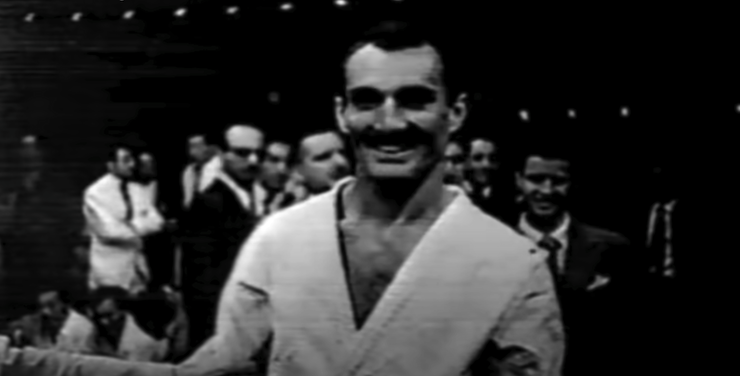
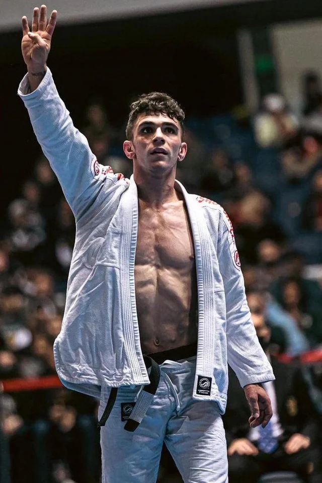

Qu'est-ce que le Jiu-Jitsu Brésilien ?
Le Jiu-Jitsu Brésilien (JJB) est un art martial et un sport de combat axé sur la maîtrise des techniques au sol.
Développé par la famille Gracie au Brésil, il repose sur l’utilisation du levier et de la technique pour soumettre des adversaires, quel que soit leur gabarit.
Pratiqué en Gi (kimono) ou No-Gi, le JJB est un pilier des sports de grappling et une discipline clé dans le MMA.
Combattants légendaires
Hélio Gracie

Considéré comme le père fondateur du Jiu-Jitsu Brésilien, Hélio Gracie a révolutionné l'art du combat au sol.
Il a développé des techniques permettant à des individus plus petits de vaincre des adversaires plus forts en utilisant la soumission.
Marcelo Garcia

Marcelo Garcia est une légende vivante du grappling et du jiu-jitsu brésilien.
Il est célèbre pour son style dynamique, ses guillotines implacables et sa technique exceptionnelle en butterfly guard.
Considéré comme un modèle d'humilité, il inspire des générations de grapplers à travers le monde.
Mikey Musumeci

Mikey Musumeci est l'une des plus grandes stars contemporaines du Jiu-Jitsu brésilien.
Premier Américain à remporter plusieurs titres mondiaux IBJJF en Gi et No-Gi, il est connu pour ses techniques innovantes et son jeu ultra-stratégique.
Surnommé "Darth Rigatoni", il représente également le grappling sur la scène internationale grâce à ses performances dans ONE Championship.